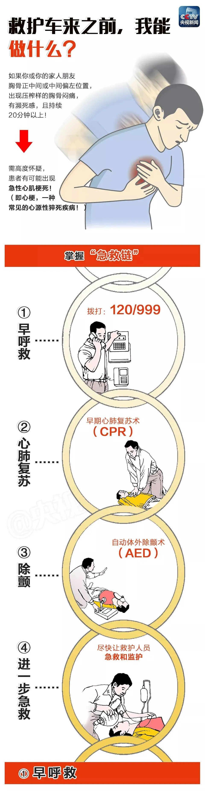
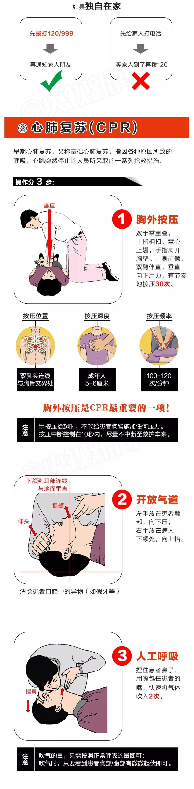
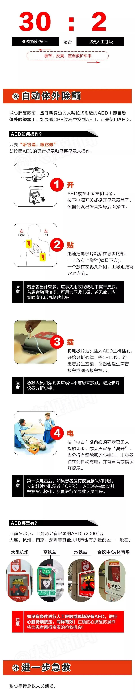

人工呼吸：根据患者的病情选择打开气道的方法，患者取仰卧位，抢救者一手放在患者前额，并用拇指和食指捏住患者的鼻孔，另一手握住颏部使头尽量后仰，保持气道开放状态，然后深吸一口气，张开口以封闭患者的嘴周围（婴幼儿可连同鼻一块包住），向患者口内连续吹气2次，每次吹气时间为1～1.5秒，吹气量1000毫升左右，直到胸廓抬起，停止吹气，松开贴紧患者的嘴，并放松捏住鼻孔的手，将脸转向一旁，用耳听有否气流呼出，再深吸一口新鲜空气为第二次吹气做准备，当患者呼气完毕，即开始下一次同样的吹气。如患者仍未恢复自主呼吸，则要进行持续吹气，成人吹气频率为12次/分钟，儿童15次/分钟，婴儿20次/分钟，但是要注意，吹气时吹气容量相对于吹气频率更为重要，开始的两次吹气，每次要持续1～2秒钟，让气体完全排出后再重新吹气，一分钟内检查颈动脉搏动及瞳孔、皮肤颜色，直至患者恢复复苏成功，或死亡，或准备好做气管插管。